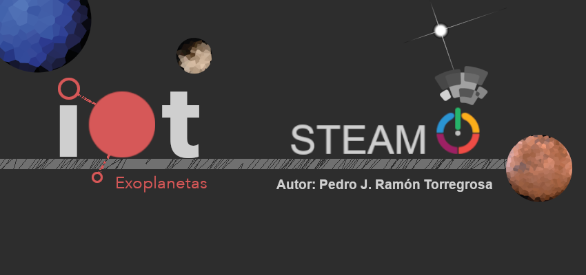

Autoría

| Título | IoT Exoplanetas |
|---|---|
| Descripción | REA de la asignatura de Computación y Robótica para 2º de ESO sobre la introducción en el Internet de las cosas a través del diseño de un tracker que muestre en pantalla los datos de diferentes sistemas exoplanetarios, empleando como microprocesadores placas Arduino que se conectan de manera autónoma. |
| Persona elaboradora de contenido | Pedro Jesús Ramón Torregrosa |
| Licencia | Licencia Creative Commons Reconocimiento No comercial Compartir igual 4.0 |
Este contenido fue creado con eXeLearning, el editor libre y de fuente abierta diseñado para crear recursos educativos.